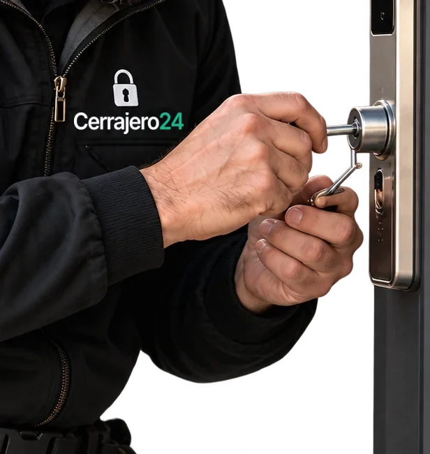

Быстрый выезд мастера
Оперативный выезд по Бильбао и ближайшим районам.
Экстренное вскрытие замков


Бильбао • Бискайя
Услуги
Открываем замки квартир, частных домов, коммерческих помещений, автомобилей и сейфов. Выполняем ремонт, замену и установку замковых механизмов.

Входные, металлические, бронированные и межкомнатные двери.

Двери и багажники автомобилей разных марок.

Механические, кодовые и электронные сейфовые замки.

Гаражные замки, роллеты и запирающие механизмы.

Офисы, магазины, склады и другие коммерческие объекты.

Заедание, поломка механизма, проблемы с ключом.

Замена цилиндра, механизма или дверной фурнитуры.

Монтаж новых и дополнительных замковых механизмов.

Диагностика и восстановление работоспособности замка.
Цены
Стоимость зависит от типа замка, его состояния и сложности работ. Уточняем детали и согласовываем цену до начала открытия.

Работаем24/7
| Услуга | Цена |
|---|---|
| Аварийное открытие дверных замков | от 45 € |
| Открытие автомобилей | от 45 € |
| Открытие сейфов | от 60 € |
| Ремонт и замена замков | от 70 € |
| Установка и врезка замков | от 90 € |
| Выезд мастера по Бильбао | уточняется |
| Ложный вызов | уточняется |
Почему выбирают LockBilbao
Помогаем быстро, аккуратно и прозрачно. Работаем по Бильбао и Бискайе, объясняем стоимость заранее и подбираем решение под конкретную ситуацию.
Оперативный выезд по Бильбао и ближайшим районам.

Помогаем ночью, в выходные и праздничные дни.
Сначала ищем способ сохранить замок и дверь без лишних повреждений.
Стоимость согласовывается до начала работ, без неприятных сюрпризов.
Реальные мастера с опытом работы с разными типами замков и дверей.
Даём гарантию на ремонт, замену и установку замковых механизмов.
Процесс
Вы звоните или оставляете заявку, объясняете, что случилось, называете адрес в Бильбао или муниципалитет Гран-Бильбао.
Специалист уточняет тип двери, замка и неисправность. Сообщает условия и стоимость выезда.
Мастер прибывает по адресу, проверяет право на доступ к объекту, согласовывает работы и приступает к открытию.
Проверяем работу замка. При необходимости предлагаем ремонт или замену. Клиент принимает выполненную работу.
Нужен срочный выезд? Позвоните дежурному мастеру.
Мы на связи и готовы помочь в любой ситуации.
Двери и замки
Стальные входные двери квартир и частных домов.
Усиленное полотно, многозапорные замки и защитные накладки.
Массив и шпон, в том числе старые двери в домах Каско-Вьехо и Абандо.
Двери подъездов, калитки и двери общих зон жилых домов.
Двери ванных, спален и кабинетов с защёлкой или замком.
Офисы, кабинеты, магазины и другие коммерческие помещения.
Кладовые, подсобные помещения, щитовые и технические этажи.
Секционные, подъёмные и распашные ворота, двери общих паркингов.
Самый распространённый тип в Испании, включая цилиндры с защитой от бампинга.
Замки с бородчатым ключом, часто в старых и бронированных дверях.
Замки с дисковым секретом и полукруглым ключом.
Дополнительные засовы, которые в Испании часто ставят поверх основного замка.
Механические и электронные кодовые замки на дверях и сейфах.
Умные замки: открытие картой, отпечатком пальца или через приложение.
Навесные замки на воротах, роллетах, складах и трастеро.
Замки с несколькими ригелями по периметру двери.
Работаем с замками производителей
Безопасность
Стремимся открыть замок без повреждений. Если это невозможно, заранее объясним причину и согласуем дальнейшие действия.
Большинство захлопнутых дверей и стандартных цилиндров открываются без разрушения: механизм продолжает работать с вашими ключами.
Если цилиндр сломан, ключ обломан глубоко или замок изношен, безопаснее заменить личинку. Новую ставим сразу на месте.
Цилиндры высокого класса защиты специально сопротивляются вскрытию. Честнее сказать об этом заранее, чем обещать невозможное.
Высверливание или замену мастер начинает только после того, как вы согласовали метод и стоимость.
Просим DNI, NIE или паспорт и документ, связывающий вас с адресом: договор аренды, escritura или счёт за коммунальные услуги. Для автомобиля — permiso de circulación. В спорных случаях работаем в присутствии Policía Municipal или Ertzaintza.
На ремонт, установку и новые комплектующие даём гарантию. Срок и условия указываем в документе о выполненных работах.
Отзывы
5.0
70 отзывов в Google
О компании
LockBilbao — служба аварийного вскрытия и обслуживания замков в Бильбао и Гран-Бильбао. Открываем двери квартир и домов, автомобили, сейфы и гаражи, а после открытия ремонтируем, меняем и устанавливаем замки.
На вызов приезжает мастер в фирменной форме, с документами и полным набором инструмента. Перед работой он объясняет, что будет делать, и называет цену. После — проверяет замок вместе с вами и оформляет документ с гарантией.

География
Выезжаем на открытие дверей и замков во все районы Бильбао и в муниципалитеты агломерации Гран-Бильбао.
Карта зоны выезда загружается…
Зона выезда
и другие муниципалитеты агломерации Гран-Бильбао.
Выберите район Бильбао или муниципалитет, чтобы узнать, как уточнить время приезда.
Полезно знать · LockBilbao
Если входная дверь не открывается, важно сначала определить характер проблемы и не повредить замок случайными действиями. Ниже объясняем, как проходит аварийное открытие дверей, когда требуется замена механизма и что подготовить до приезда мастера.
Во многих случаях входную дверь удаётся открыть с сохранением замка и дверного полотна. Результат зависит от конструкции двери, типа цилиндра, состояния механизма и причины блокировки. Например, захлопнувшаяся дверь и неисправный многозапорный замок требуют разного подхода.
Мастер LockBilbao сначала осматривает дверь и оценивает возможность бережного открытия. Если для восстановления доступа потребуется повреждение или замена отдельных деталей, специалист объяснит ситуацию и согласует действия до начала работы.
Подробнее об открытии дверейНе стоит резко проворачивать ключ, ударять по замку или пытаться вскрыть дверь подручными предметами. Это может усугубить неисправность, повредить цилиндр и увеличить стоимость последующего ремонта. Проверьте, не мешает ли закрытию перекос полотна и есть ли признаки повреждения ключа.
Если механизм по-прежнему не работает, свяжитесь с мастером. Сообщите, поворачивается ли ключ, открывается ли ручка и какой замок установлен. По этим сведениям специалист сможет предварительно оценить сложность вызова.
Ремонт дверных замковМенять замок после каждого аварийного открытия не обязательно. Если механизм исправен, а дверь открыта без повреждений, обычно достаточно проверить его работу. Замена может понадобиться, когда цилиндр изношен, ключ сломался внутри, механизм повреждён или продолжает заедать.
Отдельная ситуация — потеря ключей или переезд в новую квартиру. Даже если дверь открывается нормально, новый цилиндр помогает исключить использование старых комплектов ключей. Мастер подскажет, достаточно ли замены личинки или требуется весь замок.
Замена замков и цилиндровПри обращении назовите адрес в Бильбао или Бискайе, тип помещения и кратко опишите проблему: захлопнулась дверь, потеряны ключи, заклинил замок или повреждён ключ. Если возможно, отправьте фотографию двери и замочного механизма — она поможет с предварительной оценкой.
Подготовьте документ или другое подтверждение права доступа к помещению. Если документы остались внутри, заранее сообщите об этом диспетчеру. Перед выполнением работ мастер проверит полномочия заказчика, уточнит состояние замка и согласует стоимость и возможные дополнительные расходы.
Связаться с мастером LockBilbaoНужна помощь сейчас? Диспетчер уточнит проблему, ориентировочную стоимость и возможность выезда по вашему адресу. Работаем круглосуточно.
Уточнить условия выездаВопросы
Аварийное открытие дверного замка стоит от 45 €, открытие автомобиля — от 45 €, сейфа — от 60 €. Итоговая цена зависит от типа двери и замка, времени суток и района, а стоимость выезда диспетчер называет при звонке. Точную сумму мастер называет после осмотра и до начала работ — без вашего согласия он не приступает.
Время зависит от района, времени суток и загрузки дежурных мастеров. Диспетчер называет ориентировочное время приезда сразу при звонке, а если мастер задерживается — предупреждает заранее. Быстрее всего мы приезжаем в центральные районы Бильбао. В отдалённые муниципалитеты Гран-Бильбао, например в Мускис или Ларрабецу, дорога занимает больше времени.
В большинстве случаев — да, особенно если дверь захлопнулась на защёлку, а цилиндр исправен. Бронированные двери и замки высокого класса защиты иногда не позволяют сохранить механизм. Мы стремимся открыть замок без повреждений, а если это невозможно, заранее объясняем причину и согласуем дальнейшие действия и стоимость.
Да. Мы принимаем заявки и выезжаем 24 часа в сутки, семь дней в неделю, включая выходные и праздничные дни. Ночью, с 22:00 до 08:00, а также в выходные и праздники действует доплата — её размер диспетчер называет при звонке, до выезда мастера.
Да, это одна из самых частых ситуаций. Если дверь захлопнулась, а ключ остался в замке с внутренней стороны, мастер подберёт способ, который подходит именно для такого случая. После открытия мы попросим показать документ, подтверждающий, что вы живёте по этому адресу: DNI, NIE, договор аренды или счёт за коммунальные услуги.
Не пытайтесь вытащить обломок шпилькой или клеем: так его можно протолкнуть глубже и повредить цилиндр. Если дверь открыта — не закрывайте её. Позвоните мастеру: он извлечёт обломок специальным инструментом, проверит механизм и, если цилиндр пострадал, предложит заменить его на месте. Извлечение ключа стоит от 60 €.
Для квартиры или дома — документ с фото (DNI, NIE или паспорт) и подтверждение связи с адресом: справка о прописке (empadronamiento), договор аренды, escritura или счёт за коммунальные услуги. Для автомобиля — permiso de circulación или другие документы на машину. Если документы внутри, проверяем их сразу после открытия. В спорных ситуациях работаем в присутствии полиции.
С 22:00 до 08:00, а также в выходные и праздничные дни к базовой стоимости добавляется доплата — её размер зависит от времени и сложности работ. Полную сумму с учётом доплаты мы называем при звонке — до того, как мастер выедет к вам, чтобы ночной вызов не обернулся неожиданным счётом.
Да. Мастер возит с собой популярные цилиндры и замки разных классов защиты, поэтому замену обычно выполняем в тот же визит. Если для вашей двери нужна особая модель, например для бронированной двери, подберём её и согласуем время повторного визита. Цену материалов называем до установки.
Да, мы работаем с бронированными дверями (puertas acorazadas), многозапорными, кодовыми и электронными замками. Это более сложные вызовы: стоимость начинается от 150 € и зависит от модели и класса защиты. Для электронного замка уточните модель и что именно не работает — разряжена батарея, сбой или механическая поломка.
Да. Отправьте фото замка с обеих сторон двери через форму на сайте или в WhatsApp и коротко опишите ситуацию. Снимки удобно сделать прямо с телефона: снаружи — цилиндр крупным планом, изнутри — ручку и задвижку. Мастер определит тип механизма и назовёт ориентировочную стоимость. Окончательная цена подтверждается на месте после осмотра — до начала работ.
Да, мы работаем во всех 26 муниципалитетах Гран-Бильбао: на левом берегу (Баракальдо, Сестао, Португалете, Сантурци), на правом (Гечо, Лейоа, Эрандио), в долине Асуа, в Басаури, Гальдакао и других. Стоимость выезда за пределы Бильбао зависит от расстояния — диспетчер назовёт её при звонке.
Заявка на выезд
Не можете открыть дверь, автомобиль или сейф? Оставьте заявку, и специалист свяжется с вами, уточнит проблему и условия выезда.
+34 944 123 456Круглосуточно, без выходных и праздников
Написать в WhatsApp